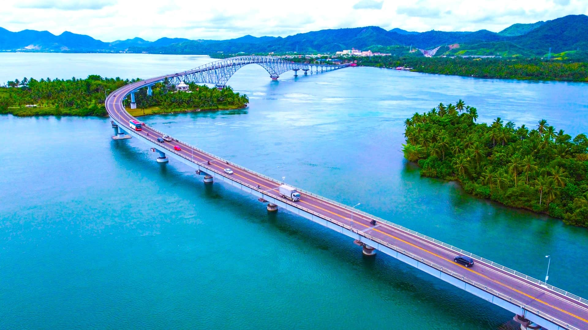
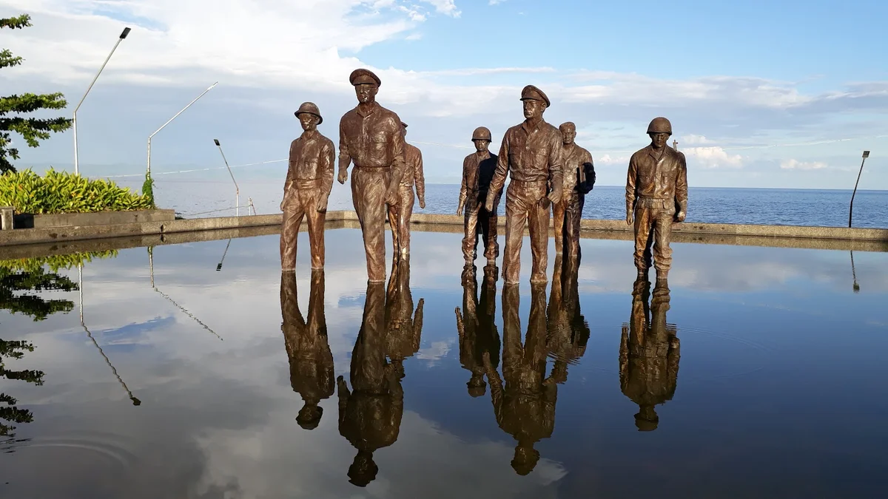
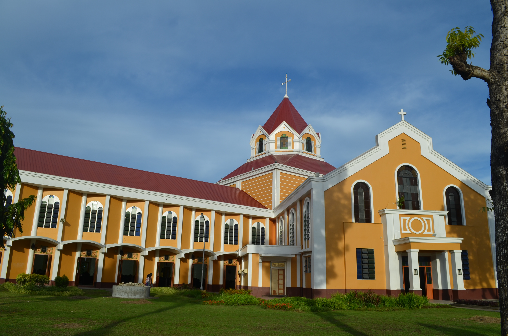

Spanning the narrow strait between Samar and Leyte, San Juanico Bridge is an iconic symbol of connection and progress in Eastern Visayas. Known as the longest bridge in the Philippines over a body of water, it offers breathtaking views of the sea and surrounding islets, making it not only an engineering marvel but also a must-visit destination for travelers exploring the region.

Completed in 1973, San Juanico Bridge connects the islands of Samar and Leyte, linking the cities of Tacloban City and Santa Rita. Stretching over 2 kilometers, the bridge plays a crucial role in transportation and economic activity in the region. Its graceful steel arch design, combined with a gentle S-shaped curve, makes it both functional and visually striking.
Beyond its practical importance, the bridge has become a popular tourist attraction. Visitors are drawn to its scenic beauty, especially during sunrise and sunset when the sky reflects off the calm waters below. Whether crossing by car or stopping to admire the view, the experience offers a unique perspective of the region’s geography and charm. The bridge also stands as a reminder of the country’s infrastructure development during its time of construction.

The bridge was completed in 1973 and remains one of the most recognizable landmarks in Eastern Visayas.
San Juanico Bridge is one of the longest bridge in the Philippines over seawater, stretching more than 2 kilometers
The bridge features a distinctive S-shaped design, adding to its visual appeal.

